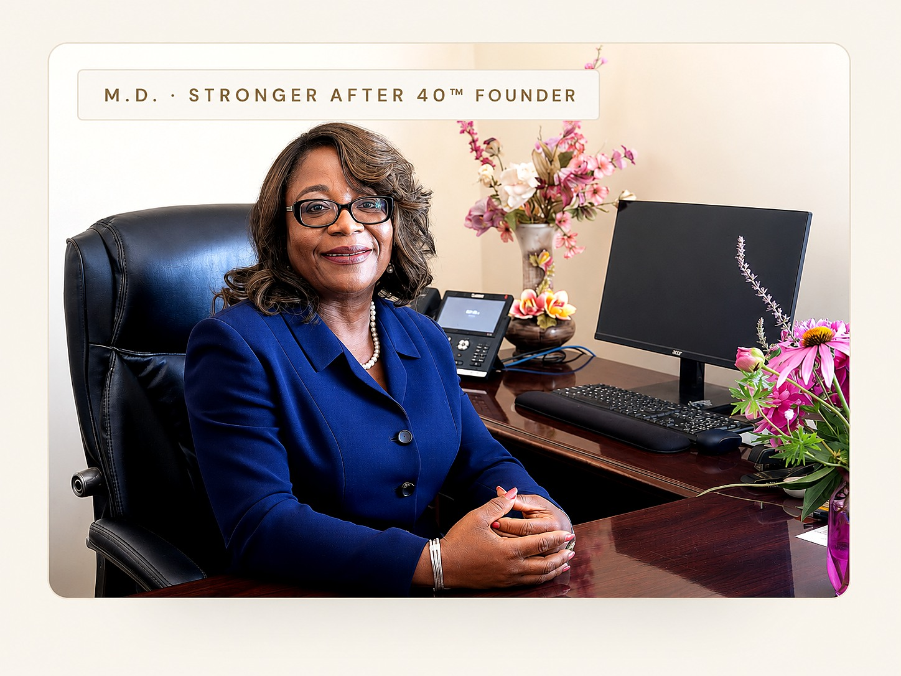

Muscle
Lean muscle support can decline steadily after 40 — influencing metabolism, posture, recovery, and your body's ability to manage daily physical demands.
A physician-guided Muscle Restoration system designed to help adults over 40 rebuild strength, improve stability, and support long-term physical confidence.
Statistics: aggregate clinical literature on age-related sarcopenia. All figures to be confirmed with Dr. Obayan before publication.
Muscle support, metabolism, joint mechanics, hormonal changes, recovery capacity, and lifestyle factors all influence how strong and capable the body feels over time.
Many adults continue working hard, staying active, and eating well, yet still notice reduced strength, slower recovery, less stability, or declining physical confidence.
This is rarely about willpower. It is often the result of measurable changes in muscle support, body composition, joint mechanics, and recovery capacity that develop over time.
The shift is biological, system-based, and measurable.
As muscle support declines, joints, posture, balance, mobility, and spinal stability can all be affected. We evaluate body composition and movement patterns to create a physician-guided plan for rebuilding support from the inside out.
Lean muscle support can decline steadily after 40 — influencing metabolism, posture, recovery, and your body's ability to manage daily physical demands.
When the muscles supporting a joint weaken, the joint may absorb more load, affecting comfort, function, and long-term movement quality.
The spine relies on deep core and postural muscle support. When that support declines, stability, posture, and comfort can change.
The good news is that this change is not permanent — and it is not something you have to accept.
The ANEW Muscle Restoration System™ is a physician-guided strength restoration system designed to help you rebuild muscle support, improve stability, and restore long-term physical confidence.
The approach is clinical, restorative, and system-based. We measure what's happening in your body — then build a personalized muscle restoration strategy around it.
The result is a customized strength support plan focused on stability, function, confidence, and longevity.

M.D. · Stronger After 40™ FounderDr. Dianne Obayan leads the ANEW Muscle Restoration System™ with a clinical, measurement-first approach. Every physician-guided performance plan is built around what your body is actually doing — not what a generic protocol assumes.
Patients receive a personalized muscle restoration strategy grounded in body composition data, joint and postural assessment, and clinical experience treating adults at this exact stage of life.
The system is physician-guided from first evaluation through follow-up — so you always know where you stand and what comes next.
Understand the muscle, fat, and metabolic patterns influencing how your body performs — then review the findings through a physician-guided lens.
A clear, measured process built around evaluation, personalization, restoration, and long-term rebuilding.
Your evaluation includes a physician-guided review of strength patterns, body composition changes, goals, and factors contributing to declining physical performance after 40.
InBody analysis, joint review, posture assessment, and goals are translated into a customized strength support plan.
Begin a physician-guided performance plan focused on rebuilding muscle support, improving movement quality, and protecting joint function.
Track measurable progress as strength, stability, function, and physical confidence improve over time.
For the first time in years, I understood why my body felt different — and what to do about it. The strategy was clear, measured, and built around my goals.
Start with a physician-guided evaluation of your strength patterns, body composition changes, goals, and the factors contributing to declining physical performance after 40.
Book Your Stronger After 40 Evaluation